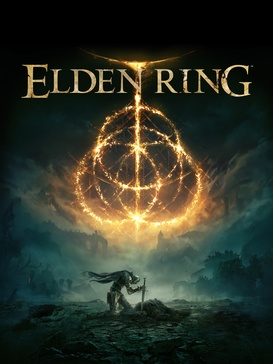
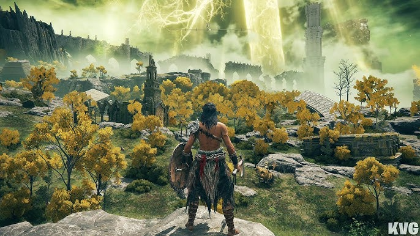
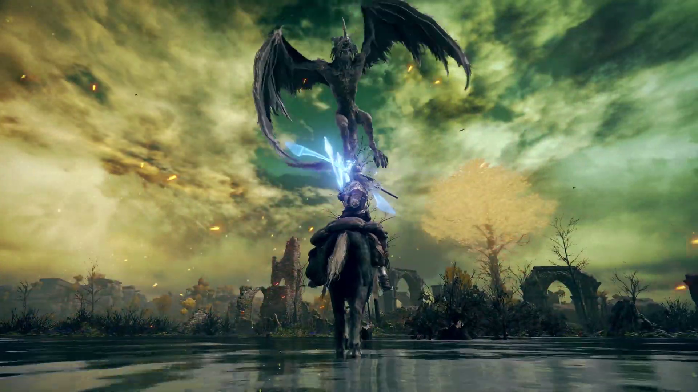
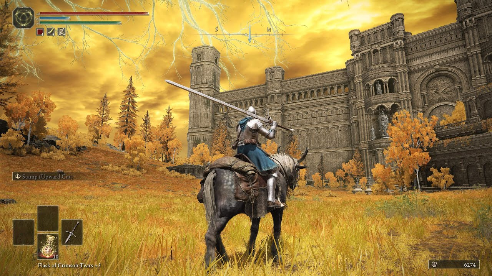

Elden Ring

Elden Ring is a 2022 Action Role-Playing Open World game made by FromSoftware. It is played in third person perspective and follows the player character's journey to become the Elden Lord and reshape the futue of the Lands Between. They do this by leveling up stats in order to become more powerful, while exploring a vast land that has become decrepit as the ages have passed. Here is a brief synopsis taken from Wikipedia:
Synopsis
Elden Ring takes place in the Lands Between, a fictional landmass ruled over by several demigods. It was previously ruled over by the immortal Queen Marika, who acted as keeper of the Elden Ring, a powerful force that manifested as the physical concept of order. When Marika eventually shattered the Elden Ring and disappeared, her demigod children began warring over pieces of the Ring in an event called the Shattering. Each demigod possesses a shard of the Ring called a Great Rune, which corrupts them with power. In the game, the player character is a Tarnished, one of a group of exiles from the Lands Between who are summoned back after the Shattering. As one of the Tarnished, the player must traverse the realm to repair the Elden Ring and become the Elden Lord.
Available On:
- Xbox
- PC
- Playstation
- Nintendo Switch
Image Gallery



